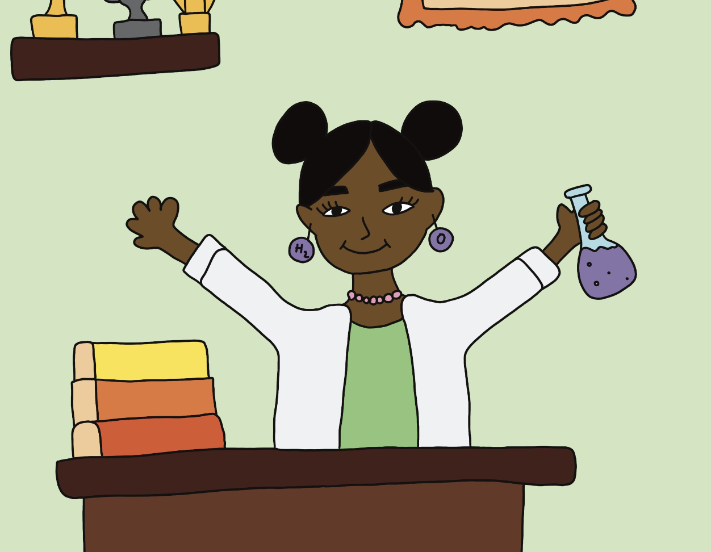

Visual Design
My experience includes but is not limited to Adobe Creative Cloud (Photoshop, Illustrator, and more), Procreate, Canva, and Figma. I have created visual designs for merch items, user interfaces, social media, as well as other printed material.
I am passionate about creating brand identities, including the color palette, typography, visual brand extensions such as iconography & reusable assets, setting the brand tone, and creation of primary/ secondary logos. Hence, I can also work under brand guidelines as needed.
Confidential work not listed. Feel free to contact me and ask more on my skill set.
Logo Creation Work
I began working as a freelance designer and branding consultant as a rising sophomore. While I cannot share most of my work, you can find some examples of the logos I have designed here.

Brand Books
In this section, you’ll find examples showcasing my work in graphic design and branding, including color palettes, typography, and brand guidelines.

Moments of Reflection
In my free time, I love messing around with digital art and illustration. Each piece in the series forms part of a larger narrative, an evolution of feelings.

Empowered Conversations
I designed the landing page and advised color choices for Empowered Conversations, an organization focused on destigmatizing sexual assault through conversations. Check the page out here.
Doctor Smart
I wrote and illustrated a zine for children attending grades 3-5 of marginalized communities. It aims to both underscore the difference between unintended and unanticipated consequences, as well as inspire the students to learn STEM.